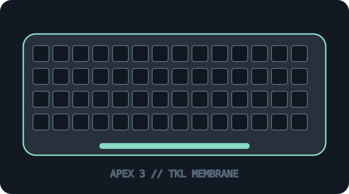

[ KEYBOARDS AND INTEGRATED POINTING DEVICES // IDENTIFIED SKU ]
SteelSeries Apex 3 TKL
Tenkeyless wired keyboard with whisper-quiet membrane switches and IP32 resistance rating.

MODEL IDENTIFICATION: Apex 3 TKL, black/white and regional layout SKUs; read the product label to establish color, locale and full part number. This archive entry identifies a real manufacturer product/variant; physical labels and dated manuals supersede generalized family descriptions.
Model specifications
| Catalog subcategory | Keyboards and integrated pointing devices |
|---|---|
| Exact model / SKU | Apex 3 TKL, black/white and regional layout SKUs; read the product label to establish color, locale and full part number. |
| Layout and key arrangement | Tenkeyless compact layout preserving function row, arrows and navigation cluster while omitting the numeric keypad. Regional language layouts vary. |
| Switch type / mechanism | SteelSeries Whisper Quiet membrane switches, not discrete mechanical switches. Manufacturer rates key switches for 20 million presses; the RGB layout and product color can vary. |
| Interface and protocol | Wired USB-A connection; no wireless mode. USB is standard keyboard HID for basic input; SteelSeries GG/Engine is needed for supported software configuration. |
| Key rollover / anti-ghosting | SteelSeries advertises anti-ghosting keys but does not specify a numeric rollover limit in the product information guide. Do not call it full NKRO without model-specific evidence. |
| External dimensions | Approximately 364 × 150 × 40 mm (width × depth × height); weight about 639 g. These measurements apply to Apex 3 TKL, not the full-size Apex 3; verify the product label and physical revision. |
| OS and host compatibility | Basic USB HID typing is compatible with standard USB keyboard hosts. SteelSeries GG/Engine configuration support is OS/version dependent; supported software features should be checked separately for Windows/macOS/Linux. |
| Revision / regional caveat | Apex 3 TKL is not the full-size Apex 3 or mechanical Apex Pro TKL. Color/locale, key legends, dimensions, bundled accessories, firmware and SteelSeries GG support differ by SKU/revision. |
Preservation and service notes
Keep the USB cable attached strain relief safe, record measured chassis dimensions and actual key rollover test, and avoid immersion despite the IP32 rating. Disconnect before cleaning.
Record the as-found SKU/revision, host OS and version, connection method, firmware, keymap and test method. Do not infer rollover or compatibility from the connector alone; clearly separate unpublished manufacturer specifications from tested observations.
Manufacturer sources
- SteelSeries Apex 3 TKL product pageManufacturer TKL model page and switch/anti-ghosting feature description.
- SteelSeries Apex 3 manual and product information guideOfficial manufacturer user guide and product information document.
Manufacturer pages can be revised or retired. Retain the applicable dated manual/specification with the physical equipment record.